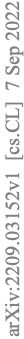
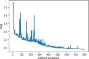

A multiclass Q-NLP sentiment analysis experiment using DisCoCat
Abstract
Sentiment analysis is a branch of Natural Lan- guage Processing (NLP) which goal is
to assign sentiments or emotions to particular sentences
or words. Performing this task is particularly use- ful for
companies wishing to take into account customer
feedback through chatbots or verbatim. This
has been done extensively in the literature us- ing various approaches, ranging
from simple mod- els to deep BERT neural networks. In this pa- per,
we will tackle sentiment analysis in the Noisy Intermediate Scale Computing
(NISQ) era, using the DisCoCat model of language. We will first present the basics of
quantum computing and the DisCoCat model. This
will enable us to define a
general framework to perform NLP tasks on a
quantum computer. We will then extend the two- class classification that was
performed by Lorenz et
al. (2021) to a four-class sentiment analysis ex- periment on a much larger dataset, showing the scalability
of such a framework.
1
Introduction
to Quantum Computing
For a more complete introduction to Quantum
Computing, the reader is invited to read Nielsen and Chuang (2010). The
base unit of any quan- tum computer is the qubit, which can be seen as a two-dimensional complex
vector represented by its wave function
|ψ⟩ = α |0⟩ + β |1⟩. α and β are complex numbers, which squared amplitude is the probability of measuring the wave function in the
associated quantum state. In the same
way, we may consider the system made of two uncor-
related qubits |ψ1⟩ = α1 |0⟩ + β1 |1⟩ and |ψ2⟩ =
α2 |0⟩ + β2 |1⟩. The
joint system can be written
|ψ⟩ = α1α2 |00⟩ + α1β2 |01⟩ + β1α2 |10⟩ + β1β2 |11⟩, or equivalently |ψ⟩ = |ψ1⟩ ⊗ |ψ2⟩, where ⊗ repre- sents the tensor product.
Using this notation, we can
generalize to n un- correlated qubits, which joint system’s is written
|ψ⟩ = |ψ1⟩ ⊗ ... ⊗ |ψn⟩. The
Born rule can be used to retrieve the probability of measuring the system
|ψ⟩ in state x by computing
p(x) = | ⟨x|ψ⟩ |2. Fur-
thermore, one can perform elementary operations on those qubits through quantum gates.
Those gates can be represented as linear algebra
oper- ations on |ψ⟩ and correspond to instructions that will be
physically performed on the quantum com- puter. The gates used along with their parameters is referred to as an Ansatz. An example of such Ansatz is given in Figure 1.
Figure 1: A three qubit
quantum circuit U
with different gates. (a) represents a Hadamard gate,
(b) a
parameterized controlled Z-Rotation and (c) a
measurement operation
This allows us to define a
generic way of per- forming supervised machine learning tasks using variational
quantum circuits. The data is first
encoded in a quantum state |ψ0⟩. We then ap- ply a parameterized
quantum circuit U (θ)
to |ψ0⟩,
where θ is trained with the labeled dataset. We measure the wave
function |ψ⟩ = U (θ) |ψ0⟩. The result being probabilistic by nature,
we perform this operation multiple times to retrieve the out- come
probabilities.
Figure 2: Pipeline to perform supervised machine
learning tasks on a quantum computer
The choice of Ansatz for
U is crucial, since the design of the circuit
has to be chosen so that the result is a function
of the outcome probabilities.
In some cases, the result
is not directly a function of the outcome probabilities of the n qubits, but a function of the outcome probabilities of n − r qubits under some conditions that have to satisfy the other r qubits. In Figure 1, we could expect the second and third qubits
to be 0 for our run to be valid, the result only being given
by the first qubit.
This requires some additional
post-selection, forcing us to only keep the runs where the con- ditions on the r qubits
are met. This will be par- ticularly important in the
following, since we will expect 0 effects on many of our qubits.
2
The DisCoCat model
The categorical compositional distributional (Dis- CoCat) model of meaning is based on the frame- work of compact closed
category, and the reader is invited to read Coecke et al. (2010) for a complete
introduction. The main idea behind
DisCoCat is
to decompose the language into two components. We first associate each word a
meaning, as com- monly done using word embedding. This word embedding can be done by
projecting the words on a vector space made of basis vocabulary (for example
700 words). The second component of
our language is the syntactic structure of the sen- tences, which is commonly represented by a syntax tree. How the words relate to each other tells us the global meaning
of the sentence. An example of such
syntax tree can be found in Figure 3
Figure 3: Syntax tree of a simple noun-verb-noun sentence
Taking into
account both those
aspects can be done through the use of tensor
products by follow- ing the
below steps.
1.
Compose the tensor product
of every word through their word embedding.
s = w1 ⊗ w2 ⊗ ... ⊗ wn
2. Construct a linear map F corresponding to the sentence’s syntax tree.
3. Apply
the linear map to the vector s,
retriev- ing the meaning of the
sentence S = F(s).
Why this DisCoCat model is particularly suited to quantum computing
now becomes apparent.
The Tensor Product Representation (TPR) requires to store the tensor product
between n words, which scales exponentially in n. This makes this model
unusable on classical computers, with several ter- abytes required
to store a single sentence.
How- ever, as seen in Section 1,
storing the tensor prod- uct of n words will scale linearly in the number of qubits. A more convenient way of handling
these TPR is through
the direct use of DisCoCat dia- grams. This representation is illustrated in Fig-
ure 4, where boxes denote tensors and links tensor contractions.
Figure 4: DisCoCat
diagram of the sentence Furi-
ous neighbour attacks child
Using
this quantum-suited representation of lan- guage as our data encoding process,
we can take a closer look on how to perform
NLP tasks.
3
General
pipeline for QNLP tasks
We can define
a general framework for performing QNLP
tasks with the steps below.
1.
The sentence is
parsed to obtain its syntax tree. For
large datasets, this would require an automatic parser.
2.
The syntax tree
and the sentence are then combined to obtain the DisCoCat
diagram which is written in an efficient way.
3.
The DisCoCat diagram is mapped to a pa- rameterized
quantum circuit, which param- eters are obtained
through training.
4.
The quantum circuit is compiled and
exe- cuted
on a quantum computer multiple times to retrieve the measurement statistics.
5.
Post-processing
is performed to select only runs where the r
qubits have 0 effects. This gives us the final result.
Those steps are summarised
in Figure 5. In Sec-
tion 4, those steps will be detailed on a real senti- ment analysis task.
Figure 5: Pipeline
to perform NLP tasks on a quantum computer
4
Sentiment analysis
experi- ment
Lorenz et al. (2021)
defined this framework and tested it on two-class meaning
classification, yield- ing promising results. In this paper, we propose a similar approach
to perform sentiment analysis on four
emotions with a larger dataset. We
restrict ourselves to the four most basic emotions: happi- ness, fear, anger, sadness. We
will be using 3 and 4 words sentences, since we will be working with simulators
or small size quantum computers.
To circumvent the absence
of automatic parser at our disposition, we create the
sentences based on their syntax. We
first start by defining the nouns, adjectives, transitive and intransitive
verbs that will constitute our dataset. For each syntax
- for example
adjective-noun-verb-noun - we cre- ate every sentence
possible matching this syntax. We therefore have access to the syntax of every
sentence in our dataset.
|
Nouns
|
Adjectives
|
Verbs
|
|
neighbour child
boy
|
anxious
ecstatic irritated distressed
blissful furious petrified frightened miserable young, blind
cheerful
|
attack
scare anger amuse demoralise cry
laugh dance scream
|
The second step,
corresponding to the writing of the DisCoCat diagram,
is done through
Dis-
coPy, an open source toolbox for computing with monoidal
categories developed by Felice et al. (2021). This allows us
to efficiently write the diagrams and map them to quantum circuits.
An example of
a DisCoCat diagram and
its associated quantum circuit is depicted on Figure 6. The parametrisa-
tion of the Ansatz was done following Lorenz et al. (2021) and led to using two qubits for verbs and nouns.
Figure 6: DisCoCat diagram and its associated
quantum circuit. (a) Top qubits
represent the ini- tial
qubits. (b) Gates applied to the
qubits. (c) Bottom qubits expected to
be 0. (d) Measured qubits giving the
result probabilities
We run the circuits multiple
time with post- selection and measure
the two qubits of interest
to retrieve the outcome
probabilities (|00⟩, |01⟩, |10⟩,
|11⟩). These
outcome probabilities directly give us the emotion linked to our sentence. The pa- rameters of the Ansatz are trained using a Cross-
entropy loss and the outcome
probabilities. The optimiser chosen was COBYLA, a gradient free optimizer. We split our dataset into a training and test dataset and plot the evolution of the cost function on the training dataset in Figure 7.

Figure 7: Evolution of the cross entropy on the
training dataset
Once the training of our variational quantum circuits has converged, we measure our accuracy
on the test dataset made of 180 sentences. We
plot the results in the form of a normalized confusion matrix, comparing the ground truth and predic- tion.
Figure 8: Normalized
confusion matrix on the test dataset
We reach satisfying accuracy
results with an F1-score of 78%, with a confusion
matrix concen- trated on
the diagonal.
5
Conclusion and prospects
The DisCoCat model of
meaning, by its structure and the computations it entails, seems to be an
adequate way of tackling NLP problems on quan- tum
machines. The potential scalability
of the presented experiment bodes well for the future. The sentence
length, the number of sentences
and the vocabulary basis all grow linearly or sublin-
early in the number of qubits. Running
inde- pendent evaluations of quantum circuits on mul- tiple quantum processors -if they become more
accessible-, could be an adequate way of handling huge amount
of sentences. With quantum pro- cessors of around 1000 qubits,
performing NLP
experiments on whole texts could be possible. In this paper, we have started to show the
potential scalability of this method, realising for
the first time a sentiment analysis
with four emotions with a dataset of
over 800 sentences.
However, it is still
important to remind that we are to
this day still far from a quantum ad- vantage. For the experiment presented in
this pa- per, a simple TF-IDF feature extractor
coupled with a Naive Bayes classifier
reached 95% accu- racy. This can be explained by the simplicity of the sentences used along with the small
depth of the quantum circuits at hand. In
a more general way, supervised learning can be directly linked to kernel
methods, with the mapping to the higher dimensional Hilbert space corresponding to the en- coding of
the data on the quantum computer. For
a quantum advantage to arise,
the kernel linked
to this higher dimensional mapping has to be hard to
simulate classically, as shown by Schuld (2021).
References
Coecke, B., Sadrzadeh, M., and Clark, S. (2010). Mathematical
foundations for a compositional distributional model of meaning. CoRR.
Felice, G. D., Toumi, A., and
Coecke, B. (2021). DisCoPy: Monoidal categories in python. Elec- tronic Proceedings in Theoretical Computer Sci- ence, 333:183–197.
Lorenz, R., Pearson, A., Meichanetzidis, K., Kart- saklis, D., and Coecke,
B. (2021). QNLP
in practice: Running compositional
models of meaning on a quantum computer. CoRR.
Nielsen, M. A. and Chuang, I. L. (2010).
Quantum Computation and Quantum Information. Cam- bridge University Press.
Schuld, M. (2021). Supervised quantum machine learning models
are kernel methods.